In a field where the “big ideas” seem to change on a weekly basis, Chinchilla (Hoffmann et al., 2022) is a standout paper: it came out a little over 18 months ago, and found then-LLMs to be massively undertrained compared to their model size, with the then dominant scaling laws (Kaplan et al., 2020) suggesting that on log-log scales, model size \(N\) be scaled ~3x (2.7x) faster than the dataset size \(D\)1.
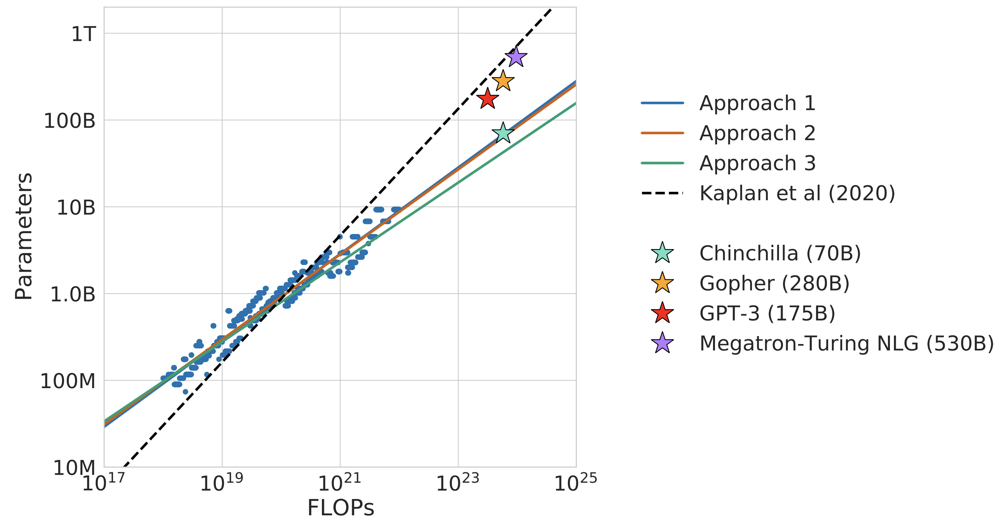
Chinchilla, by accounting for the effect of the learning rate scheduler, proposed that model size and dataset size should in fact be scaled in a 1:1 ratio. This meant that the (then) largest 500B+ parameter models (such as PaLM 540B (Chowdhery et al., 2022) or MT-NLG 530B (Smith et al., 2022)) were substantially undertrained2, and would need several orders of magnitude more compute than was available for that size to be “optimal”3. This triggered an industry-wide shift towards smaller models trained for longer (for a given compute budget).
Let’s dive deeper into the scaling laws, how they were derived, their implications for LLM training runs, how to (and not to) interpret them.
What’s compute optimal?
Chinchilla’s focus is on training models that are “compute optimal”: in this context, creating a model with the lowest loss for a given, fixed amount of compute \(C\). There’s two words in the phrase “compute optimal”, so let’s examine them both.
Compute
Before beginning a training run, we can estimate the total number of FLOPs (Floating Point Operations) a run will have available from just four factors:
- The FLOPs/sec4 per chip.
- The number of chips.
- How long (in hours/days) we plan the run to be.
- The MFU (Model FLOPs/sec Utilization) of the run. MFU is the % of maximum FLOPs/sec your chips can actually use towards training your model.5
So, suppose I have access to 64 H100s for 1 week, and initial tests reveal my MFU is 50%. Then, the total FLOPs available during this run is:
\[\frac{989 \times 10^{12}\text{ FLOPs}}{\text{second} \cdot \text{H100}} \times 604800 \text{ seconds} \times 64 \text{ H100} \times 50\% = 1.91 \times 10^{22} \text{ FLOPs}\]
Assuming the chips cost 4$/hour, this is a 43K$ training run! That is a lot of money to be spending, even on a run quite small by LLM standards. You’d want this money spent optimally (under some definition of optimal), and this is where Chinchilla comes in.
Optimal
There are two factors that influence the amount of FLOPs a run uses: The size of the model \(N\), and the number of tokens \(D\). A commonly used approximation (introduced in (Kaplan et al., 2020)) to the number of FLOPs a training run uses (the cost \(C\)) is
\[C \approx 6ND\]
Note the directly inverse relationship between model size and tokens used here: for a fixed FLOPs budget \(C\), doubling the model size \(N\) means it can only “see” half as many tokens \(D\) during training6. There’s a sweet spot to strike here: a model not so small it doesn’t have enough capacity to learn from too many tokens, but not so large it barely sees enough tokens to make use of the added capacity.
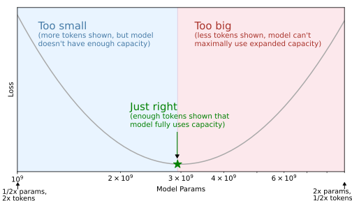
Which N and D is best? The answer is in the scaling law literature (Kaplan et al., 2020, Sec 6.1): the “optimal” \((N_{\text{opt}}, D_{\text{opt}})\) are the ones that produce a model that achieves the lowest loss on a validation set of the pretraining data, subject to the fixed cost constraint (the green star above).
Chinchilla’s general approach then, is to compute \((N_{\text{opt}}, D_{\text{opt}})\) for a few small values of \(C\), and use them to extrapolate \((N_{\text{opt}}, D_{\text{opt}})\) for the \(C\) equivalent to the full training run.
Chinchilla Scaling
The full Chinchilla paper uses three different methods (fixed model size, fixed FLOPs and parametric fitting) to estimate the scaling behavior between model size and data, with similar results across all three. We focus on approach 2, where they use a set of 9 different FLOPs counts (from \(6 \times 10^{18}\) to \(3 \times 10^{21}\)). The method is as follows:
Calculating an IsoFLOP curve
First, for a given \(C\), train multiple models, varying \(N\) and \(D\) such that the FLOPs count remains \(C\). Compute the validation loss \(L\) of each model, producing a plot like this:
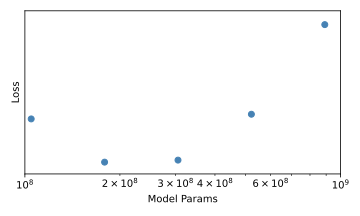
Then, fit a parabola to the points \((\log N, L)\). This allows us to predict the loss of each model of size \(N\) trained under the fixed amount of compute \(C\). The authors call this an IsoFLOP curve7, and it allows us to find \(N_{\text{opt}}\), the model size with the lowest loss for that \(C\).
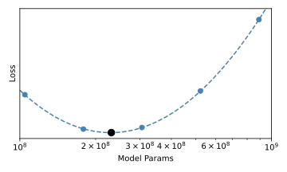
This process is then repeated for each of the 9 values of \(C\), resulting in the full IsoFLOP curves plot:
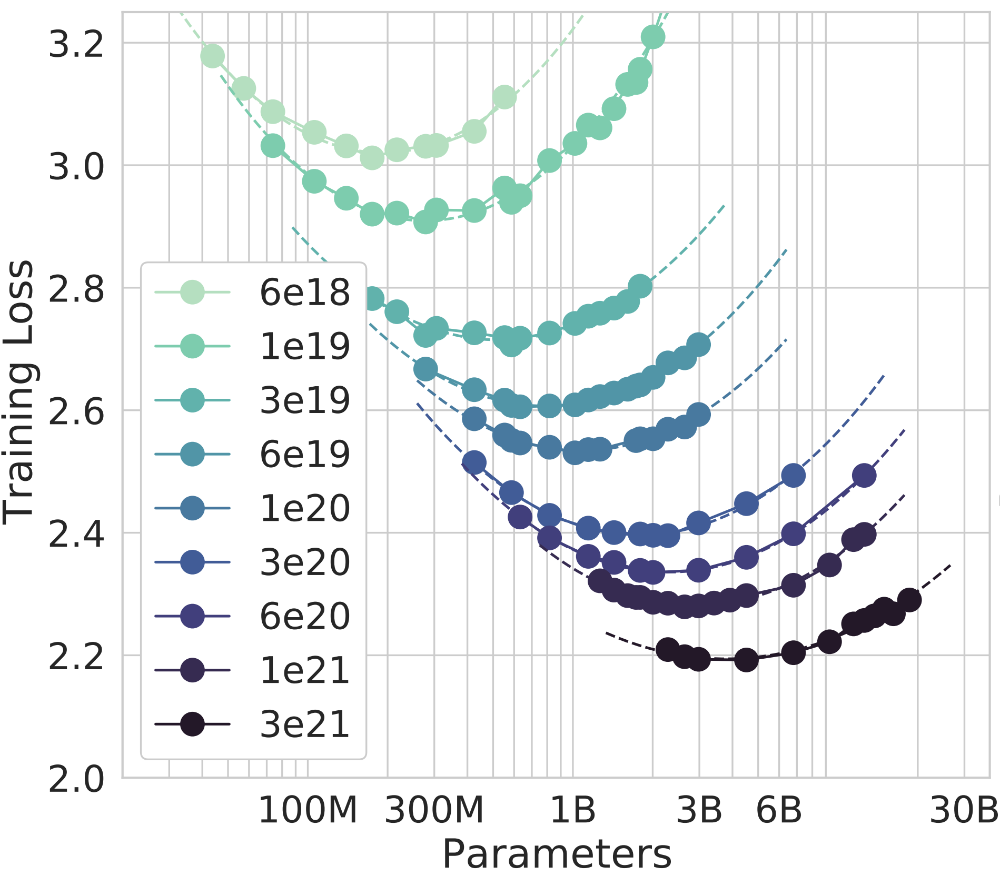
Model Scaling
Each of these 9 curves above have one value of \(N_{\text{opt}}\). The authors then fit a power law \(N_{\text{opt}} = AC^a\) to the points \((C, N_{\text{opt}})\). This is where the scaling law appears: when \(a=0.49 \approx 0.5\), they obtain a very tight fit to the empirically calculated \(N_{\text{opt}}\) values. This allows them to extrapolate the best model size (66B) for Chinchilla’s full run of \(5.76 \times 10^{23}\) FLOPs, two orders of magnitude larger than the largest IsoFLOP curve of \(3\times10^{21}\) FLOPs.
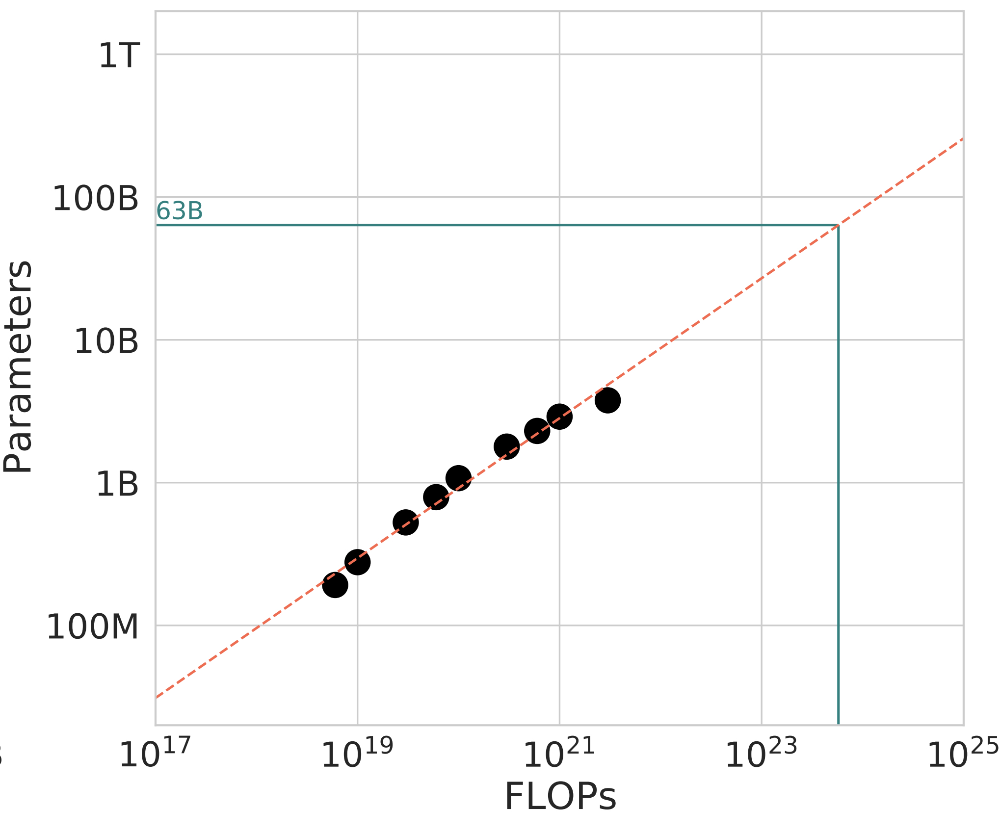
Extrapolating two orders of magnitude in FLOPs is quite the jump, but there’s an exact reason \(C=5.76 \times 10^{23}\) is chosen for the full training run - the same amount of compute was used to train the preceding Gopher 280B (Rae et al. (2022)) model. According to the scaling laws calculated here, a compute optimal model for Gopher’s compute budget should be 4x smaller, trained on 4x more tokens.
This prediction is tested empirically, and it holds, validating the scaling laws: Chinchilla 70B outperforms Gopher 280B on a suite of benchmarks, as detailed in Section 4.2 in the paper.
Data Scaling
With scaling, the discussion usually centers on how to scale the model size w.r.t. increasing compute. This is because \(N\) and \(D\) are not independent: for a fixed \(C\), if you know \(N_{\text{opt}}\) you also know \(D_{\text{opt}}\)8. Fitting a similar power law, \(D_{\text{opt}} = BC^b\), the authors obtain \(b=0.51 \approx 0.5\)9, which one should see as an alternate view of the same finding above!
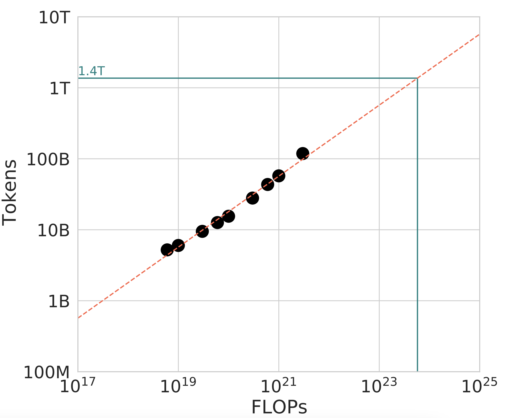
Doing it this way, and noticing both \(a \approx 0.5\) and \(b \approx 0.5\) does make the 1:1 ratio between model size scaling and data scaling clear.
Generality
The analysis in the core body of the paper takes place using the MassiveText dataset, a proprietary dataset also used to train Gopher. To validate the generality of these findings on other datasets, in Appendix C they reproduce this scaling behavior on two subsets of MassiveText, C4 (a public dataset first introduced in Raffel et al. (2020)) and GitHub code with 4 values of \(C\). In both, they find the constant \(a\) linking \(C\) and \(N_{\text{opt}}\) to be \(\approx 0.5\):
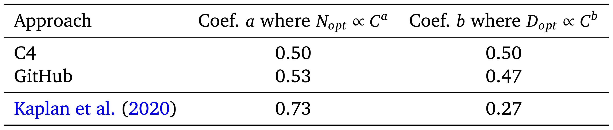
It is important to note that these estimates are not highly precise: the power-law is fitted on only 9 values of \(C\) in the main experiments10 (and only 4 values of \(C\) for the GitHub/C4 experiments in Appendix C). The 80% confidence intervals for \(a\) using the IsoFLOP approach is \((0.462, 0.534)\), which is still rather wide! Moreover, while a power law fit works well, we don’t know if the “true” functional form between \(C\) and \(N_{\text{opt}}\) is a power law11.
Yet, despite not being highly precise, the 1:1 scaling suggested by the results do outperform the previous 3:1 scaling - Chinchilla 70B is 4x smaller than Gopher 280B, but trained on 4x more data it outperforms the larger model, highlighting the importance of data. That the measurements of \(a\) and \(b\) replicates across three approaches (Section 3), and that the IsoFLOP approach replicates on two more datasets (C4 and GitHub, producing estimates of \(a\) and \(b\) that are each closer to \((0.5, 0.5)\) than \((0.73, 0.27)\)) provide further support that 1:1 scaling is an improvement generally.
Quadratic Compute
One intuitive (and important) conclusion from the 1:1 scaling of model size and data means, if you want a compute optimal model that’s 2x large, you need to train it on 2x many tokens. And since FLOPs count is the product of both, this means you need 4x as much compute!
Continuing that reasoning, if you want a model 5x larger, you need 25x as much compute, and so on! \(N_{\text{opt}} \propto C^{0.5}\) rewritten differently is \(C \propto N_{\text{opt}}^2\), that is you need to scale compute quadratically with model size. This is enormously expensive, and is the core reason model sizes peaked around early-2022 (pre-Chinchilla): we’re only just now doing training runs with \(C\) large enough that models of that size (500B+) are compute optimal, and future model size scaling will remain slower (compared to pre-Chinchilla) because of this quadratic factor.
Chinchilla in practice
Chinchilla, again, was an impactful paper that revealed just how wasteful training runs up till that point have been (see Timbers (2023) for historical overview). Its message is memorable and concise: scale data with model size in a 1:1 ratio.
This message does need to be interpreted with nuance! For instance, the paper comes with this table calculating the optimal number of params and tokens across a range of FLOPs values:
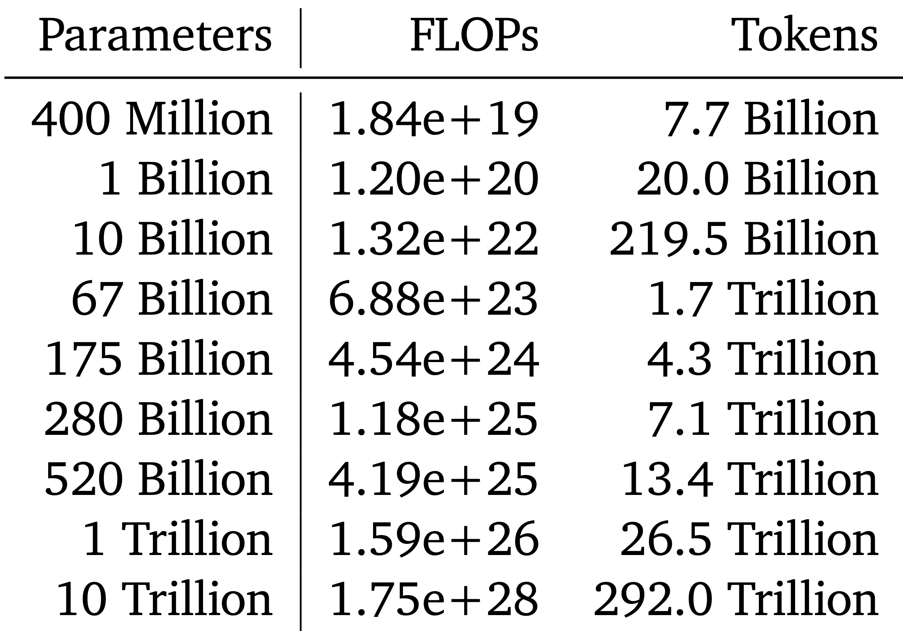
But strictly speaking, this is only optimal for the exact dataset + model architecture used to compute the coefficients of the scaling law, that is, \(N_{\text{opt}}=AC^a\) and \(D_{\text{opt}}=BC^b\). The argument Chinchilla makes is that \(a \approx 0.5\) and \(b \approx 0.5\) generally, across datasets; it does not make any claims as to what general values of \(A\) and \(B\) are, and they can vary from dataset to dataset!
For instance, the final Chinchilla 70B model is trained on 1.4T tokens. If we had an aggressively deduplicated version of the MassiveText dataset (such as (Abbas et al., 2023)), it is possible to have a scaling law experiment that yields 1.0T tokens as optimal, while also staying consistent with \(b \approx 0.5\), producing a plot that looks like the following:
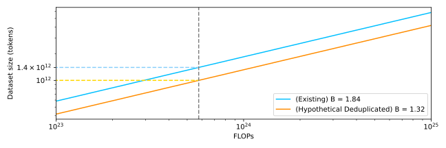
To interpret this, remember that the scaling law is fitted as \(D_{\text{opt}} = BC^b\). On a log-log plot, \(B\) acts as the intercept, while \(b\) is the slope. Chinchilla makes claims about the slope: that \(b \approx 0.5\) (and \(a \approx 0.5\) on the model size side). This means once you’ve already found a value \((N_{\text{opt}}, D_{\text{opt}})\) at a small value of \(C\), Chinchilla provides you the recipe to scale up your \(N\) on more tokens \(D\) from that exact data mixture.
But even a single \((N_{\text{opt}}, D_{\text{opt}})\) pair will be unknown to you for your exact data/architecture setup at the start of your experiments, so at the minimum you’ll want to perform ~3-5 small training runs to produce one IsoFLOP curve, to produce at least one \((N_{\text{opt}}, D_{\text{opt}})\) you can extrapolate from.
Subsequent work (such as Dey et al. (2023), Appendix D) replicated MassiveText-like dynamics in \(a, b\)12 and in \(A, B\) (finding ~20 tokens per parameter to be optimal) on a different dataset, the Pile (Gao et al., 2020). This suggests a general rule of thumb (20 tokens/param) for decoder-only, natural language models13, that have been recommended in other blogposts (such as Anthony et al. (2023)).
That said, it is important to recall the assumptions this rule-of-thumb is built on14, and to be willing to calculate a new IsoFLOP curve if any assumption is violated.
Compute optimal?
Chinchilla’s scaling laws are concerned with optimality under one definition of cost: the amount of FLOPs used in training. This translates to real world, monetary cost only if you’re paying per-unit of compute. In practice, if you’re a big lab, you likely already have a contract reserving accelerator capacity with one of the large cloud providers; the compute is already paid for, and the real cost is opportunity.
Chinchilla only tells you how to produce the “best” (lowest validation loss) model given a compute budget; the meta-calculus of how valuable each model is15, is an entirely other (and very real!) concern that it cannot answer. Moreover, there are practical instances where you may want to “overtrain” a smaller model with more data (= higher training costs), so that it is easier to serve to end users, as we see next.
Inference Costs
In industry applications, much of the cost will often not be in training, but in inference, serving the model to end users.
Since transformer inference cost is linear in model size, a model that’s 3x smaller will take 3x less FLOPs for inference16. Suppose the compute optimal model for an initial \(2.66\times 10^{21}\) FLOPs budget is \(N=2.8\text{B}\) params trained on \(D=156\text{B}\) tokens. We can always train a 1.5B parameter model for longer than compute-optimal to achieve the same performance17 as the 2.8B model. This “extra compute” we call the compute overhead. Just how large is it?
Chinchilla’s scaling laws also give us a way to quantify this! Instead of looking at IsoFLOP curves (where the FLOP is the quantity held constant on each curve) we can look at IsoLoss curves (where the loss is the quantity held constant on each curve). This specific \(N\) and \(D\) produce a loss of 2.24; we can produce a full range of \((N, D)\) values with that same loss, as shown on the left.
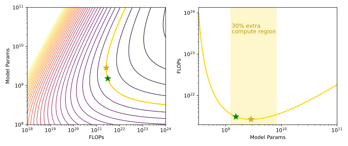
We can also plot the IsoLoss curve for a loss of 2.24, as on the right. As we see, the “cheapest” way to achieve that loss is through the compute optimal 2.8B model (gold star). But we can also produce a model nearly half the size (1.5B, green star) if we’re willing to spend \(3.09\times 10^{21}\), or 16% more instead. When is this worth it?
Payoff
Short answer: calculate the minimum number of tokens that, when inferred using the 1.5B “overtrained” vs 2.8B “optimal” model, will have saved us more in inference than the excess spent in training. Then:
\[ \begin{align*} \text{overhead} &= (2N)D_{\text{inf}}\\ \text{2.8B FLOPs} - \text{1.5B FLOPs} &= (2 \times 1.5 \times 10^9)D_{\text{inf}}\\ 3.09\times 10^{21} - 2.66\times 10^{21} &= (2 \times 1.5 \times 10^9)D_{\text{inf}}\\ D_{\text{inf}} &= \frac{3.09\times 10^{21} - 2.66\times 10^{21}}{2 \times 1.5 \times 10^9}\\ D_{\text{inf}} &= \text{140B}\\ \end{align*} \]
That is, if we’re serving more than 140B tokens, the cost savings from this ~45% smaller model will become worth it. There’s a couple things to note here:
- The inference cost of \(D_{\text{inf}}\) tokens passed through a model of size \(N\) is \(\approx 2ND_{\text{inf}}\), not \(\approx 6ND_{\text{inf}}\). This is because we only need the costs for the forward pass, not the forward + backward pass (where the backward pass is 2x more than the forward pass).
- This also means every training token is 3x more expensive than every inference token; we need to pass in at least 3 inference tokens for every extra training token for the cost to be worth it. Put more directly, overtraining only makes sense for models that will receive very high usage.
- To put the 140B inference tokens into context, the number of training tokens \(D\) needed for a model of size 1.5B to achieve a loss of 2.24 (based on the loss formula above) is \(\approx \text{339B}\). This means we’ll only need to serve a fraction of the tokens needed to train the model for the compute overhead to be worth it.
Generally speaking, for models intended to be used in production, a compute overhead of upto ~100% will often be worth paying to obtain a model ~30% the size (see De Vries (2023) for this analysis).
Latency
Compute isn’t the only factor at play at inference time: latency is too! A model that’s 50% the size not only uses 50% the compute, but could also reduce the computation time by upto 50%18. If that is the difference between your user waiting for the output vs. your service being not viable, that is a constraint that needs to take priority over training a compute-optimal model.
Moreover, Chinchilla’s scaling laws tell you that you can optimally use an increased compute budget by scaling your model size and data 1:1, but you can ignore it and just increase data, keeping the model size fixed. If there is an upper bound to the size of your model (due to latency considerations or otherwise), you can always improve performance (subject to diminishing returns) by training on more tokens.
This, combined with trillion-token datasets and the ability to reuse data for upto 4 epochs (Muennighoff et al., 2023) means sub-100B parameter models (and likely even larger) are not data constrained during pre-training, and can be trained far past compute-optimal (as is the case with model families such as LLama 2 (Touvron et al., 2023)) for maximal performance under compute/latency constrained inference.
Loss \(\neq\) Performance
One last thing to note is that Chinchilla is concerned exclusively with minimizing loss on a validation set: it makes no direct claims about the actual capabilities of a model. With language models, the loss used most commonly is perplexity (Huyen, 2019). But perplexity only correlates with the behaviors we want; it itself is not the objective we care about.
This can lead to counterintuitive behaviors: for instance in the PaLM2 report (Anil et al., 2023), although a 9.5B model achieves a lower loss on \(C = 1 \times 10^{22}\) FLOPs, a 16.1B model trained with the same amount of compute (but higher loss) actually performs better on downstream evaluations.
It is always critical to remember that language modeling is a proxy objective for natural language understanding (NLU) capabilities. We’re still subject to Goodharting (Sohl-Dickstein, 2022) on whether this proxy objective (perplexity) optimizes for what we really want!
Conclusion
Understanding Chinchilla’s scaling laws as derived not only helps us better understand the assumptions made, but also enables us to recalculate them given a substantial change in dataset, model architecture, or domain. Moreover, understanding Chinchilla’s definition of a compute-optimal model helps us decide when we might not want one, and might want to overtrain a smaller model instead.
Overall, Chinchilla is much more than just training compute optimal models: it’s being able to make quantifiable tradeoffs between cost, model size and dataset size.
Acknowledgements
Deeply grateful to Jack Rae, Erich Elsen and Klara Kaleb for providing feedback on early drafts of this blogpost; it is substantially clearer and more comprehensive owing to their thoughtful recommendations. Much thanks also to Garrett Honke and Jon Deaton, with whom my many (many) conversations about language models have helped shape my own understanding. All errors are definitely my own!
Appendix A: Pre-Chinchilla Scaling
Kaplan et al. (2020) had first established scaling law behaviors in large, neural language models two years prior to Chinchilla. This was an expansive work, covering many results that are very much worth learning about, such as:
- Transformers asymptotically outperforming LSTMs (as \(N\) grows larger), and the per-token loss going down across the context (whereas LSTMs plateau after 100 tokens), in Figure 7.
- Ablation between various model shapes (ratio between feedforward hidden dim and model dim, number of layers, attention head dimension) and model size, finding that for a fixed \(N\), these parameters affect loss only mildly.
- Extending the literature on critical batch size (McCandlish et al., 2018) to Transformer language models (Section 5.1).
- Early work observing additional compute can be traded off for smaller model sizes (Figure 12).
- Observing a conspicuous lump at \(10^{-5}\) PF-days at the transition between 1-layer to 2-layer networks (Figure 13), which subsequent work from Olsson et al. (2022) attributed to the formation of induction heads (which one-layer attention networks cannot form).
This work also fitted scaling laws between compute \(C\), and model size \(N\) and number of tokens \(D\). However, the estimates in this paper were \(a \approx 0.73\) and \(b \approx 0.27\); that is, \(\log N\) needed to be scaled up ~3x faster than \(\log D\):
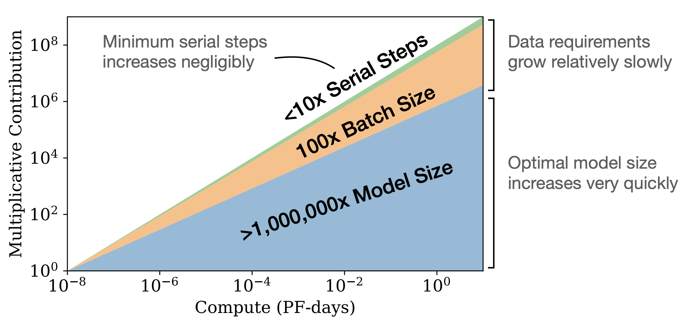
However, these estimates were derived from the “early-stopped” loss (and the authors explicitly state it as such). That is, if a 1B model was trained on 100B tokens, to estimate the loss of a 1B model trained on 50B tokens, they would use the intermediate loss (at 50B tokens processed) from the 100B tokens run.
As the Chinchilla authors subsequently pointed out, using the intermediate loss value from a longer run means the learning rate schedule has not fully decayed at that point (as that happens at the end of the run). As they show in Figure A1, using a schedule with an endpoint more than 25% beyond the measurement point19 leads to clear increases in the measured loss.
To correct for this, the Chinchilla authors trained seperate models of the same model size \(N\) for each value of \(D\), making sure that the learning rate schedule fully finishes decaying when \(D\) tokens are processed. This corrected for the overestimated measured losses, yielding \(a \approx 0.5\) and \(b \approx 0.5\), yielding the now familiar 1:1 scaling ratio.
Appendix B: Deriving \(C \approx 6ND\)
A sketch for the \(C \approx 6ND\) approximation introduced in Kaplan et al. (2020) is as follows:
- Where \(N\) is the number of parameters, the total non-embedding FLOPs per token for the forward pass can be written out as20.
\[\begin{align*} C_{\text{forward}} &\approx 2 \cdot 2d_\text{model}n_\text{layer}(2d_\text{attn} + d_\text{ff}) + 2n_{\text{layer}}n_{\text{ctx}}d_{\text{attn}}\\ &= 2N + 2n_{\text{layer}}n_{\text{ctx}}d_{\text{attn}} \end{align*}\]
\(C_{\text{forward}}\) can be described as having two terms: the first corresponding to model size, and the second corresponding to how increasing the context side \(n_{\text{ctx}}\) increases the number of FLOPs needed. For sufficiently large models with the context window sizes commonly used in training, \(2N\) is ~2 orders of magnitude larger than \(2n_{\text{layer}}n_{\text{ctx}}d_{\text{attn}}\). This allows simplifying \(C_{\text{forward}}\) to just the first term, \(C_{\text{forward}} \approx 2N\) .
Since this value is per token, for \(D\) tokens this is \(C_{\text{forward}} \approx 2ND\).
Now, the backward pass takes 2x as much compute as the forward pass. This is because, at each layer you need to compute the gradients for both the activations of the previous layer and the weights of that layer. Hence, \[\begin{align*} C &\approx 2ND + 4ND\\ &= 6ND \end{align*}\]
References
Footnotes
That is, \(\log N = 2.7\log D + K\), where K is some constant. Equivalently, \(N \propto D^{2.7}\). In concrete terms, for every 2.7 orders of magnitude increase in model size \(N\), we only need to increase dataset size \(D\) by one order of magnitude.↩︎
That is, they needed to be trained on much more data for that size to be compute optimal.↩︎
Said differently, for the total compute available to the teams then, they could’ve obtained a lower validation loss with a smaller model trained on more data.↩︎
FLOPs/sec is often written as FLOPS (with a capital S for second), but this can be confusing, so I write it out explicitly here.↩︎
In more depth, this is the FLOPs/sec used towards the computation of the training job itself (disregarding any re-computations such as activation checkpointing) divided by the peak FLOPs/sec of the hardware. Chowdhery et al. (2022) first introduced this, and this can be quickly calculated by running your job on the cluster for a few minutes (vs days/weeks for the full run).↩︎
Again, you can always double the model size and use the same number of tokens as before, but you now need 2x the compute! Chinchilla’s analyses are about how to maximally use a fixed amount of compute.↩︎
In that the FLOPs (\(C\)) is the quantity being held constant for each point on this curve.↩︎
Intuitively, if you know the size of the model, and amount of compute used to train it, you can quickly reverse calculate how many tokens the model would need to be “trained on” to hit that compute budget.↩︎
The actual 80% confidence intervals for \(a\) is \((0.462,0.534)\), so it’s not unreasonable to round it to 0.5 for simplicity.↩︎
Understandably so: computing even one of the IsoFLOP curves means training multiple models with a fair amount of compute each, which isn’t cheap!↩︎
On those lines, here’s a neat GitHub implementation using PySR to directly regress scaling laws from data (without assuming a power law fit first)↩︎
1:1 data:model scaling, as expected↩︎
without needing to produce IsoFLOPs curves for each new dataset↩︎
That the model is decoder-only, natural language, with a mixture similar to MassiveText/the Pile.↩︎
These are questions such as “Given our compute reservations, is a 3B model that can be deployable in 6 weeks more valuable than a 20B model deployable in 3 months?”.↩︎
And hence, properly optimized at scale, will be 3x cheaper.↩︎
that is, the same validation loss↩︎
Assuming we still have the same amount of hardware, and are not too bottlenecked on the generation of the output tokens.↩︎
In other words, a schedule that has not fully decayed at the measurement point.↩︎
Note this leaves out the compute used for biases, nonlinearities and layer norms, which are a tiny fraction of total compute.↩︎
Citation
@online{shafkat2023,
author = {Shafkat, Irhum},
title = {Thoughts on {Chinchilla}},
date = {2023-10-11},
url = {https://irhum.github.io/blog/chinchilla/},
langid = {en}
}